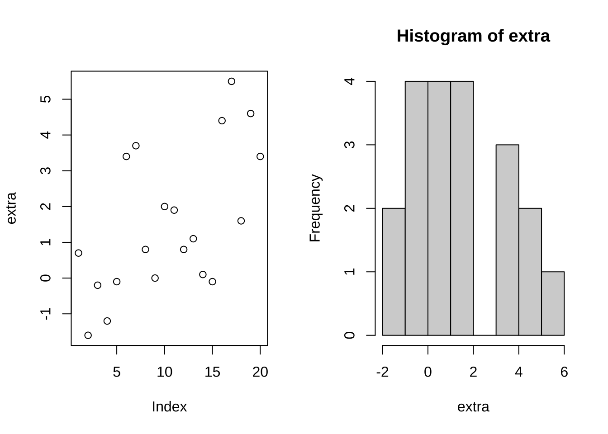
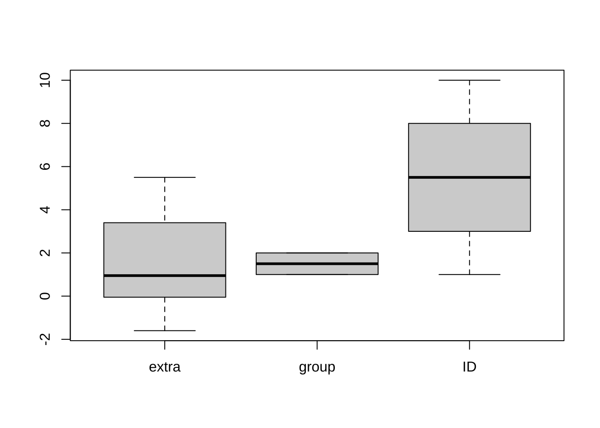
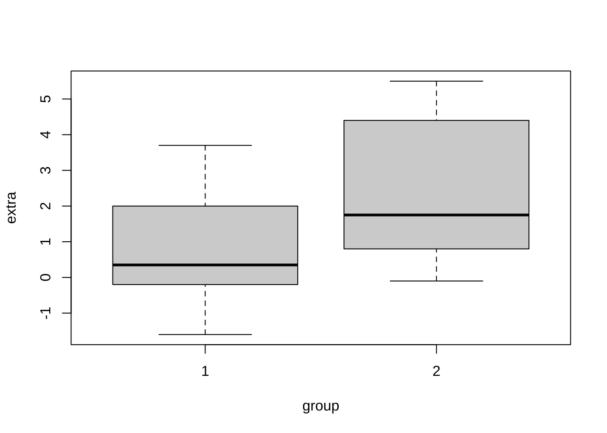
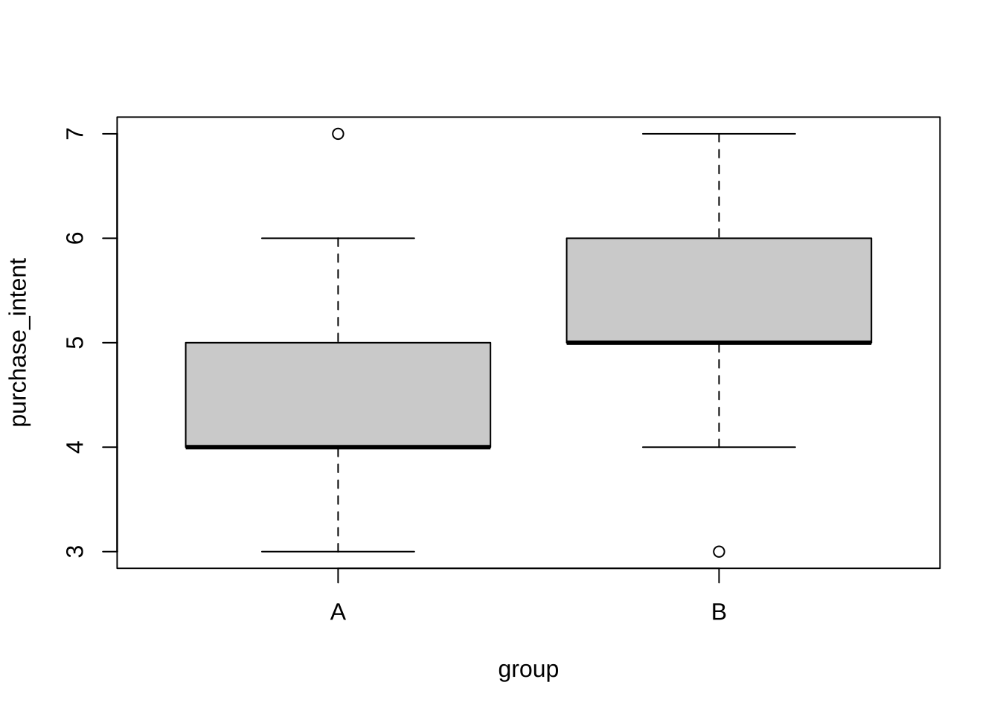
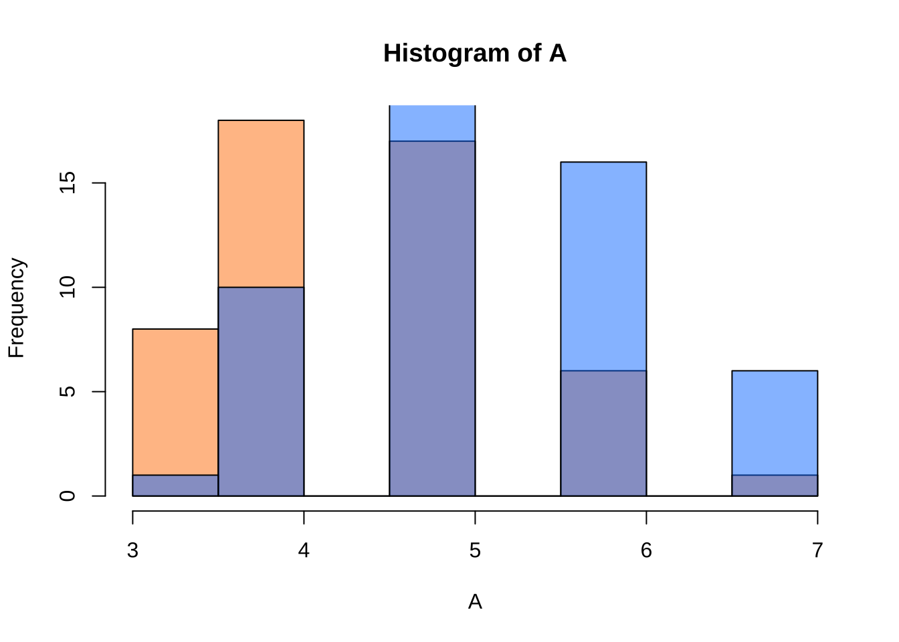
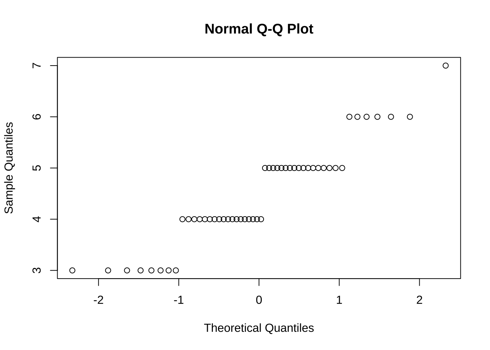
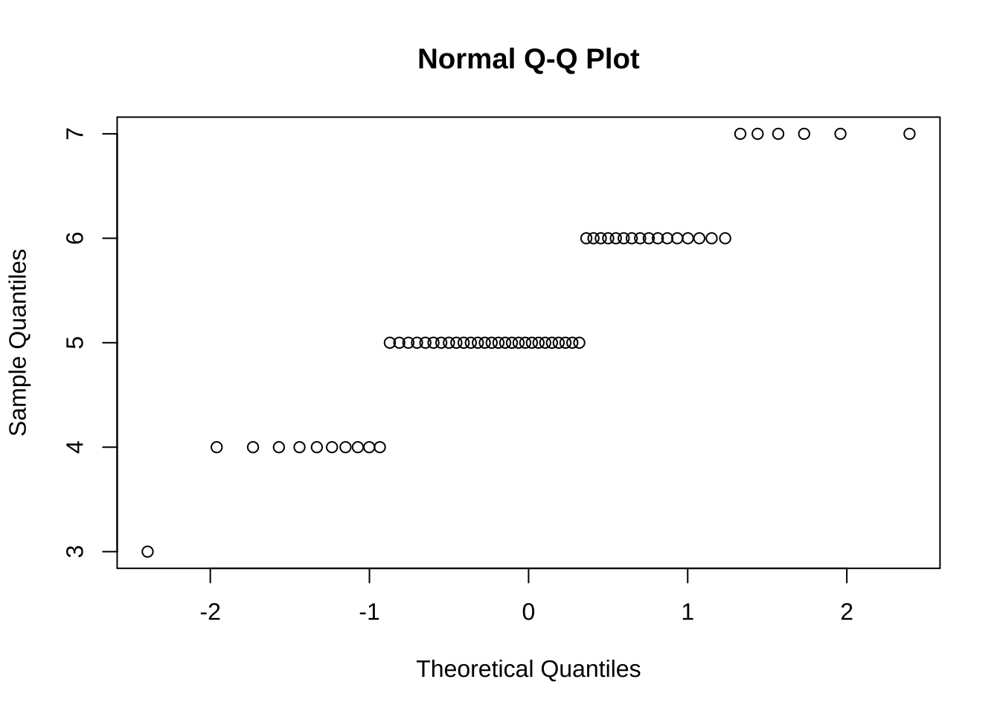
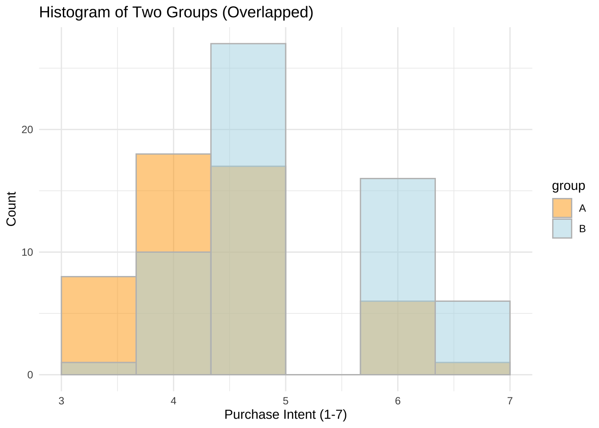
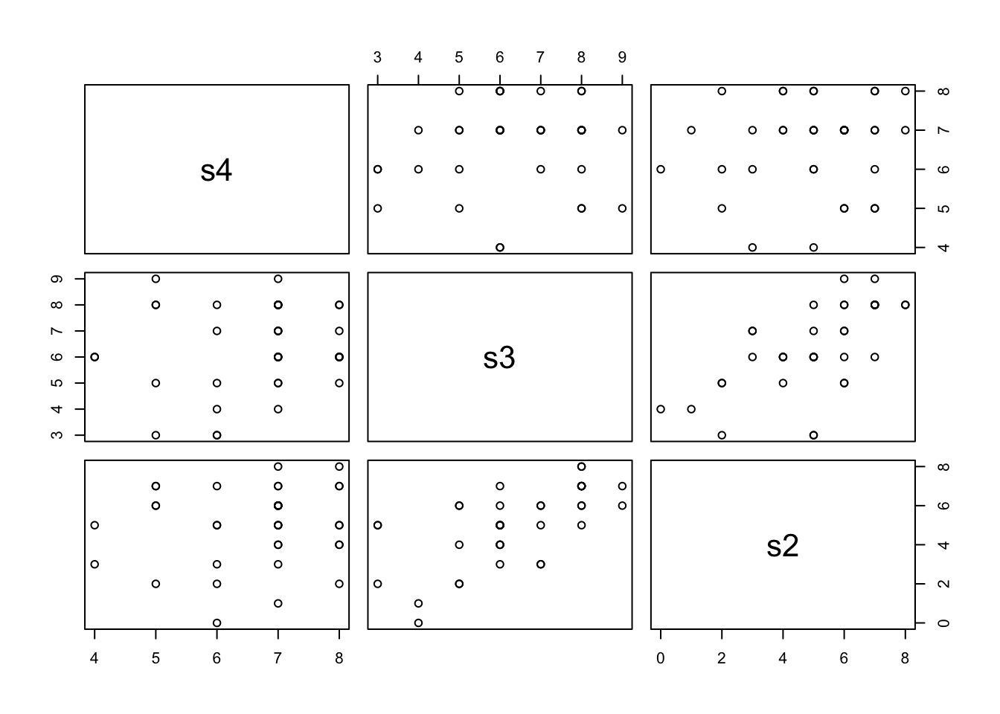
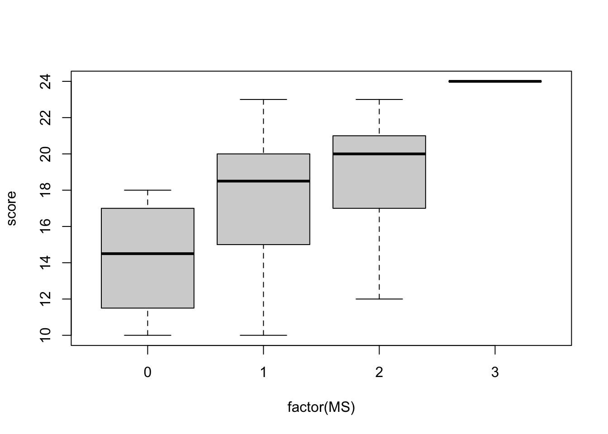

3 仮説検定
本章では, 仮説検定の中でも, 実務において良く用いられる,
- 平均値の差の検定
- 独立性の検定
について説明する. 独立性の検定と共通点のある
- 適合度検定
についても説明する.
3.1 平均値の差の検定
t検定は, Rで標準的に用意されている関数t.test()を用いて行う.
# t.test(x, y = NULL,
# alternative = c("two.sided", "less", "greater"),
# mu = 0, paired = FALSE, var.equal = FALSE,
# conf.level = 0.95, ...)
#
#
# One Sample t-test
# Performs one and two sample t-tests on vectors of data.平均値の差の検定 (ペア検定)
ペア検定を実施する場合には, t.test()の引数pairedを真 (TRUE, またはT)
に設定する. デフォルトは,paired = FALSE (F) である (ペア検定ではない).
ここでは, Rにデフォルトで収録されているデータセットsleepを用いる.
データセット: sleep
sleep: 睡眠薬の効果を調べる実験データ
- 患者10名, 2種類の睡眠薬の比較 (コントロールに対する睡眠時間の増加分)
- (extra, group, ID) 20件, 患者(ID) 10名# help(sleep)
# Data which show the effect of two soporific drugs (increase in hours of sleep compared to control) on 10 patients.
head(sleep); tail(sleep)
#> extra group ID
#> 1 0.7 1 1
#> 2 -1.6 1 2
#> 3 -0.2 1 3
#> 4 -1.2 1 4
#> 5 -0.1 1 5
#> 6 3.4 1 6
#> extra group ID
#> 15 -0.1 2 5
#> 16 4.4 2 6
#> 17 5.5 2 7
#> 18 1.6 2 8
#> 19 4.6 2 9
#> 20 3.4 2 10最初に, Rへの指示を簡潔にするために, attach(sleep) を実行する. これにより, sleep内に含まれる変数extra,group,IDについては,
それらがsleepの変数であることをその都度教えてなくても, Rは認識できるようになる
(Rの“サーチパス”に加わる).

両側検定, 片側検定は, 引数alternativeの値 (“two.sided”, “less”, “greater”) で指定する.
デフォルトはalteranative="two.sided", すなわち, 両側検定である.
# t.test(extra)
# 注) デフォルトはpaired = F (ペア検定ではない)
# 両側検定
t.test(extra[group == 1], extra[group == 2], paired = T)
#>
#> Paired t-test
#>
#> data: extra[group == 1] and extra[group == 2]
#> t = -4.0621, df = 9, p-value = 0.002833
#> alternative hypothesis: true mean difference is not equal to 0
#> 95 percent confidence interval:
#> -2.4598858 -0.7001142
#> sample estimates:
#> mean difference
#> -1.58片側検定は, 右側はalternative = "greater", 左側はalternative = "greater"で指定する.
# 片側検定
t.test(extra[group == 1], extra[group == 2], paired = T, alternative = "greater") # 片側 (右側) 検定)
#>
#> Paired t-test
#>
#> data: extra[group == 1] and extra[group == 2]
#> t = -4.0621, df = 9, p-value = 0.9986
#> alternative hypothesis: true mean difference is greater than 0
#> 95 percent confidence interval:
#> -2.293005 Inf
#> sample estimates:
#> mean difference
#> -1.58
t.test(extra[group == 1], extra[group == 2], paired = T, alternative = "less") # 片側 (左側) 検定)
#>
#> Paired t-test
#>
#> data: extra[group == 1] and extra[group == 2]
#> t = -4.0621, df = 9, p-value = 0.001416
#> alternative hypothesis: true mean difference is less than 0
#> 95 percent confidence interval:
#> -Inf -0.8669947
#> sample estimates:
#> mean difference
#> -1.58

平均値の差に関するt検定は, 二つの標本 \((x_1,x_2,...,x_{n_1})\), \((y_1,y_2,...,y_{n_2})\) の差\(\mu_1-\mu_2\)がゼロか否かを評価する統計的な手続きである (ここで, 未知の真の平均はそれぞれ, \(\mu_1\), \(\mu_2\)と表記する).
ペア検定は, さらに, この2標本のサイズが等しく (\(n_1=n_2\equiv n\)), しかも, 各々のデータ点がペア \((x_i,y_i)\) として扱える (“対応がある”) ような特別な場合である. 対応のあるケースの例としては, 同一の企業からデータを2種類, あるいは2時点について採取した場合である.
このようなペアのケースにおける平均値の差の検定は, 2標本のまま扱うのではなく, 各データ点ペアの差 \((x_i-y_i)\) を取ることで1標本に集約した上で, 1標本に対する平均値ゼロのt検定として行う.
すなわち, 帰無仮説\(H_0: \mu_1-\mu_2=0\)に対して, 対立仮説は,
- 両側検定: \(H_1: \mu_1-\mu_2 \neq 0\)
- 片側 (右側) 検定: \(H_1: \mu_1-\mu_2>0\)
- 片側 (左側) 検定: \(H_1: \mu_1-\mu_2<0\)
である. 上のsleepデータセットのケースにおいては, 標本平均の差
(\(\bar{x}_1-\bar{x}_2\))の大きさが\(-1.58\)であり, 対応する分散の大きさ
(上の結果では表示されていない) に比べて十分に小さい (帰無仮説であるゼロ
からマイナス方向に遠く離れている). その結果, 両側検定では,
p値は0.002833となり, 1%有意水準 (\(\alpha=0.01\)) でも帰無仮説は棄却される
こととなった.
一方, 対立仮説として, 右側 \(H_1: \mu_1-\mu_2>0\) を採用した場合には, 標本から計算される平均値の差は正の値となることが期待され (\(\bar{x}_1-\bar{x}_2>0\)), これは, データセットsleepから計算された値 (\(-1.58\)) とは明らかに整合的ではない. このことは, 対応するp値が\(0.9986\)と 1に近く, 帰無仮説を棄却できない大きさとなっていることに表れている.
平均値の差の検定
ペアを構成しない一般の2標本の平均値の差に関するt検定においては, 2標本の持つ未知の分散の大きさが等しいかが問題になる.
t.test()のデフォルトでは等分散性が成立しない (var.equal = FALSE) 設定となっている.
この時は, Welch検定が実行される.
もちろん, 等分散性が成立する場合には, var.equalの値はTまたはTRUE
と指定せねばならない. この時は, 未知の分散はプール化された (“pooled”)
推定値を持ちいたt検定が行われる.
A/Bテストデータ (仮想データ)
デザイン A と B のどちらが平均的な購入意向を高めるか
- id, group (A:旧デザイン, B:新デザイン), purchase_intent (1--7)
- 標本サイズ: nA=50, nB=60abtest_df <- read.csv("purchase_1-7.csv", header = T)
boxplot(purchase_intent ~ group, data = abtest_df)
等分散性の検定は, var.test()を用いることができる
# 等分散性の検定 (F検定)
var.test(purchase_intent ~ group, data = abtest_df)
#>
#> F test to compare two variances
#>
#> data: purchase_intent by group
#> F = 1.1253, num df = 49, denom df = 59, p-value = 0.6606
#> alternative hypothesis: true ratio of variances is not equal to 1
#> 95 percent confidence interval:
#> 0.6592874 1.9472951
#> sample estimates:
#> ratio of variances
#> 1.125316
# ※ 省略されることも多いその上で, Welch検定か, プール化された分散推定値を用いるt検定を実行する.
上の等分散性検定の結果より, 帰無仮説 (2標本の分散は等しい, \(\sigma_1^2=\sigma_2^2\)) は棄却されないことから (p値\(=0.6606\)), 等分散の場合について実行すれば良い.
# 等分散の場合 (Pooled variance使用するt検定)
t.test(purchase_intent ~ group, var.equal = T, data = abtest_df)
#>
#> Two Sample t-test
#>
#> data: purchase_intent by group
#> t = -4.3526, df = 108, p-value = 3.067e-05
#> alternative hypothesis: true difference in means between group A and group B is not equal to 0
#> 95 percent confidence interval:
#> -1.1449141 -0.4284192
#> sample estimates:
#> mean in group A mean in group B
#> 4.480000 5.266667しかし, 繰り返し仮説検定を行うことによる弊害 (多重検定問題) を回避するため, 等分散性の検定を行わず, いきなりWelch検定を実行することも多い.
# 等分散でない場合 (Welch t検定)
t.test(purchase_intent ~ group, data = abtest_df)
#>
#> Welch Two Sample t-test
#>
#> data: purchase_intent by group
#> t = -4.3291, df = 101.99, p-value = 3.505e-05
#> alternative hypothesis: true difference in means between group A and group B is not equal to 0
#> 95 percent confidence interval:
#> -1.1470981 -0.4262352
#> sample estimates:
#> mean in group A mean in group B
#> 4.480000 5.266667自主課題:
Q. 以上の検定結果を解釈しなさい.
Q. 片側検定にするには? 対立仮説の方向はどちらか?
Q. 購入意向 (1-7) は順序尺度では?
Q. 正規分布を前提にしたt検定を使用して良いか?
正規性の確認方法
t検定は, 標本を抽出するもととなる母集団の確率分布が 正規分布であるというのが分布に関する基本的な仮定である.
したがって, t検定の実行に先立ち, 標本が正規分布に従うか否かを調べ, t検定の前提条件が満たされているかどうかを確認することが求められる.
これは, 標本数が小さい時には特に注意する必要がある.
# ヒストグラム作成
A <- abtest_df[abtest_df$group == "A", "purchase_intent"]
B <- abtest_df[abtest_df$group == "B", "purchase_intent"]
hist(A, col = rgb(1, 0.5, 0, 0.5)); hist(B, col = rgb(0, 0.5, 1, 0.5), add = T)
# 正規性の検定
ks.test(A, "pnorm"); ks.test(B, "pnorm") # コルモゴロフ・スミルノフ (Kolmogorov-Smirnov) 検定
#>
#> Asymptotic one-sample Kolmogorov-Smirnov test
#>
#> data: A
#> D = 0.99865, p-value < 2.2e-16
#> alternative hypothesis: two-sided
#>
#> Asymptotic one-sample Kolmogorov-Smirnov test
#>
#> data: B
#> D = 0.99865, p-value < 2.2e-16
#> alternative hypothesis: two-sided
shapiro.test(A); shapiro.test(B) # シャピロ・ウィルク (Shapiro-Wilk) 検定
#>
#> Shapiro-Wilk normality test
#>
#> data: A
#> W = 0.89953, p-value = 0.0004638
#>
#> Shapiro-Wilk normality test
#>
#> data: B
#> W = 0.89262, p-value = 7.16e-05
qqnorm(A); qqnorm(B) # q-qプロット
なお, 関数ggplot()を使うことで, よりエレガントなプロットを描くことが出来る.
# install.packages("ggplot2") # 必要に応じてインストール
library(ggplot2)
ggplot(abtest_df, aes(x = purchase_intent, fill = group)) +
geom_histogram(position = "identity",
alpha = 0.5,
bins = 7, # ビンの数を適宜指定
color = "grey") + # 枠線の色 (任意)
scale_fill_manual(values = c("A" = "orange", "B" = "lightblue")) +
labs(title = "Histogram of Two Groups (Overlapped)",
x = "Purchase Intent (1-7)",
y = "Count") +
theme_minimal()
平均値の差の検定 (ノンパラメトリック検定)
上記のように, t検定は標本を抽出するもととなる母集団の確率分布が 正規分布であるというのが分布に関する基本的な仮定である.
しかしその一方で, 標本数が十分に大きい時は, 母集団の確率分布が 正規分布である必要はない.
それは, 中心極限定理の働きによって, 検定統計量が帰無仮説の下では 近似的にStudent t分布に従うことが理論的に示されるためである.
一方, 標本数が大きくない場合には, 母集団の確率分布が正規分布でない場合には, t検定の前提条件から乖離する状況となるため, 別の検定法を用いることが適切である.
ノンパラメトリック検定法は, 分布形状に関する仮定によらない, ロバスト (頑強) な検定方法である.
Wilcoxonの順位和検定 (Mann–WhitneyのU検定)
ここでは, 2群の平均値の差に関する t検定の代替的手法として, ウィルコクソン (Wilcoxon) の順位和検定を紹介する.
- 2群の中央値の差を調べる
- 外れ値に対して頑強
wilcox.test(purchase_intent ~ group, data = abtest_df)
#>
#> Wilcoxon rank sum test with continuity correction
#>
#> data: purchase_intent by group
#> W = 861.5, p-value = 5.992e-05
#> alternative hypothesis: true location shift is not equal to 0
# A,Bを定義しておいた場合, 以下の実行も可能
# wilcox.test(A, B)自主課題:
- Q. 以上の検定結果を解釈しなさい.
3.2 カイ二乗検定
# chisq.test(x, y = NULL, correct = TRUE,
# p = rep(1 / length(x), length(x)), rescale.p = FALSE, simulate.p.value = FALSE, B = 2000)
# chisq.test performs chi-squared contingency table tests and goodness-of-fit tests.3.2.1 独立性検定
# 演習用データの作成 (実務では, ファイルを読み込む)
d1 <- matrix(c(rep(c("a1", "b1"), 76), rep(c("a1", "b2"), 15),
rep(c("a1", "b3"), 41)), byrow = T, ncol = 2)
d2 <- matrix(c(rep(c("a2", "b1"), 95), rep(c("a2", "b2"), 30),
rep(c("a2", "b3"), 85)), byrow = T, ncol = 2)
d3 <- matrix(c(rep(c("a3", "b1"), 135), rep(c("a3", "b2"), 70),
rep(c("a3", "b3"), 95)), byrow = T, ncol = 2)
d4 <- matrix(c(rep(c("a4", "b1"), 69), rep(c("a4", "b2"), 10),
rep(c("a4", "b3"), 29)), byrow = T, ncol = 2)
data2 <- rbind(d1, d2, d3, d4)
colnames(data2) <- c("A", "B") # 商品種類(A), 販売チャネル(B)
head(data2)
#> A B
#> [1,] "a1" "b1"
#> [2,] "a1" "b1"
#> [3,] "a1" "b1"
#> [4,] "a1" "b1"
#> [5,] "a1" "b1"
#> [6,] "a1" "b1"
table(data2) # marginal totals
#> data2
#> a1 a2 a3 a4 b1 b2 b3
#> 132 210 300 108 375 125 250
(tbl <- table(data2[, 1], data2[, 2])) # contingency table
#>
#> b1 b2 b3
#> a1 76 15 41
#> a2 95 30 85
#> a3 135 70 95
#> a4 69 10 29
chisq.test(data2[, "A"], data2[, "B"])
#>
#> Pearson's Chi-squared test
#>
#> data: data2[, "A"] and data2[, "B"]
#> X-squared = 27.661, df = 6, p-value = 0.0001088
# chisq.test(data2[, 1], data2[, 2])
# または
chisq.test(tbl)
#>
#> Pearson's Chi-squared test
#>
#> data: tbl
#> X-squared = 27.661, df = 6, p-value = 0.0001088# A/Bテスト
# サイト導線A/Bとで, コンバージョンへの効果を比較
# 有 無
# サイト導線A 50 131
# サイト導線B 23 35
ABdat <- matrix(c(50, 131, 23, 35), ncol = 2, byrow = T)
chisq.test(ABdat)
#>
#> Pearson's Chi-squared test with Yates' continuity correction
#>
#> data: ABdat
#> X-squared = 2.4566, df = 1, p-value = 0.117
# 導線Aでコンバージョンしない人が10人増えた
# 有 無
# サイト導線A 50 141
# サイト導線B 23 35
ABdat2 <- matrix(c(50, 141, 23, 35), ncol = 2, byrow = T)
chisq.test(ABdat2)
#>
#> Pearson's Chi-squared test with Yates' continuity correction
#>
#> data: ABdat2
#> X-squared = 3.2764, df = 1, p-value = 0.07028
# Fisherの正確確率検定
fisher.test(ABdat2)
#>
#> Fisher's Exact Test for Count Data
#>
#> data: ABdat2
#> p-value = 0.06915
#> alternative hypothesis: true odds ratio is not equal to 1
#> 95 percent confidence interval:
#> 0.2796541 1.0568106
#> sample estimates:
#> odds ratio
#> 0.54104433.2.2 適合度検定
# メンデルのデータ（エンドウの交雑実験）
# 種子の特徴(形質), 黄色・丸い, 黄色・しわ, 緑色・丸い, 緑色・しわ
obs <- c(315, 101, 108, 32 ) # 観測度数
prob <- c(9, 3, 3, 1) / 16 # 理論確率分布
chisq.test(obs, p = prob) # obs と prob を用いたカイ二乗検定
#>
#> Chi-squared test for given probabilities
#>
#> data: obs
#> X-squared = 0.47002, df = 3, p-value = 0.9254
# 確認用
ex <- prob * sum(obs)
chisq <- sum((obs - ex) ^ 2 / ex)
pval <- 1 - pchisq(chisq, 3)3.3 分析例: 統計テストデータ
testdat <- read.csv("BS_stattest.csv", header = F)
# year(学年), MF(性別:男性1女性2), AS(文理:文系1その他2理系3),
# math(数学履修年数), work(勤務年数), stat(統計学経験0-2), MS(経営科学好き嫌い0-3),
# s4(4級相当得点), s3(3級相当得点), s2(2級相当得点)
colnames(testdat) <- c("year", "MF", "AS",
"math", "work", "stat", "MS",
"s4", "s3", "s2")
score <- apply(testdat[, c("s4", "s3", "s2")], 1, sum)
testdat2 <- cbind(testdat, score)
# モダンな方法
# library(tidyverse)
# testdat2 <- testdat %>% mutate(score = s4 + s3 + s2)# データの要約
# attach()を使わない場合:
# table(testdat2$MF)
# table(testdat2[, c("MF", "AS")])
# table(testdat2$s3)
attach(testdat2)
table(MF)
#> MF
#> 1 2
#> 29 8
table(MF, AS)
#> AS
#> MF 1 2 3
#> 1 17 3 9
#> 2 4 1 3
table(s3)
#> s3
#> 3 4 5 6 7 8 9
#> 3 2 5 10 5 10 2
summary(score)
#> Min. 1st Qu. Median Mean 3rd Qu. Max.
#> 10.00 16.00 18.00 17.97 20.00 24.00
fivenum(score)
#> [1] 10 16 18 20 24
hist(score)
# 相関係数
# cor(testdat[, c("math", "s2")])
# cor(testdat[, c("math", "s3")])
# cor(testdat[, c("math", "s4")])
cor(math, s2)
#> [1] 0.04241976
cor(math, s3)
#> [1] 0.2481946
cor(math, s4)
#> [1] 0.3205779
pairs(testdat[, 8:10])
# cor(testdat[, c("MS", "s4", "s3", "s2")])
cor(cbind(MS, s4, s3, s2))
#> MS s4 s3 s2
#> MS 1.0000000 0.2592955 0.4922877 0.2600562
#> s4 0.2592955 1.0000000 0.1315443 0.1245631
#> s3 0.4922877 0.1315443 1.0000000 0.6435060
#> s2 0.2600562 0.1245631 0.6435060 1.0000000
cor(MS, math)
#> [1] 0.2864297
# 箱ひげ図
boxplot(score ~ factor(MF)) # 2-level factor
# 平均値の差の検定
score_MF <- split(score, factor(MF))
t.test(score_MF$'1', score_MF$'2')
#>
#> Welch Two Sample t-test
#>
#> data: score_MF$"1" and score_MF$"2"
#> t = 2.8923, df = 13.276, p-value = 0.01237
#> alternative hypothesis: true difference in means is not equal to 0
#> 95 percent confidence interval:
#> 0.884667 6.063609
#> sample estimates:
#> mean of x mean of y
#> 18.72414 15.25000
# score2 <- testdat[, "s2"]
# score3 <- testdat[, "s3"]
# score4 <- testdat[, "s4"]
# t.test(score4, score3, paired = T, alternative = "greater")
# t.test(score3, score2, paired = T, alternative = "greater")
# ペア検定
t.test(s4, s3, paired = T, alternative = "greater")
#>
#> Paired t-test
#>
#> data: s4 and s3
#> t = 0.87426, df = 36, p-value = 0.1939
#> alternative hypothesis: true mean difference is greater than 0
#> 95 percent confidence interval:
#> -0.2516528 Inf
#> sample estimates:
#> mean difference
#> 0.2702703
t.test(s3, s2, paired = T, alternative = "greater")
#>
#> Paired t-test
#>
#> data: s3 and s2
#> t = 5.305, df = 36, p-value = 2.95e-06
#> alternative hypothesis: true mean difference is greater than 0
#> 95 percent confidence interval:
#> 0.9212852 Inf
#> sample estimates:
#> mean difference
#> 1.351351
# 得点の差のt値の計算 (確認用)
m <- mean(s3 - s2)
v <- var(s3 - s2)
tt <- m / sqrt(v / (length(s3)))# var.test(x, y, ratio = 1,
# alternative = c("two.sided", "less", "greater"),
# conf.level = 0.95, ...)
# Performs an F test to compare the variances of two samples from normal populations.# aaa <- table(testdat[, c("MF", "AS")])
aaa <- table(MF, AS)
chisq.test(aaa)
#>
#> Pearson's Chi-squared test
#>
#> data: aaa
#> X-squared = 0.18986, df = 2, p-value = 0.9094
# aaa <- table(testdat[, c("MS", "AS")])
aaa <- table(MS, AS)
chisq.test(aaa)
#>
#> Pearson's Chi-squared test
#>
#> data: aaa
#> X-squared = 16.044, df = 6, p-value = 0.01352
detach(testdat2)